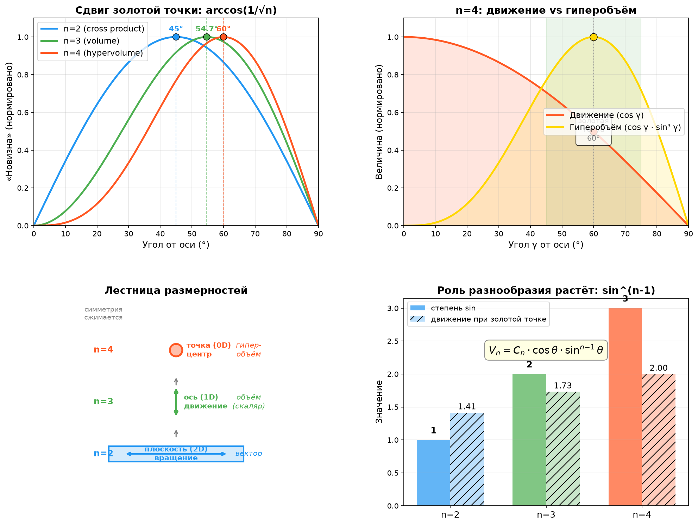

Добавь четвертый вектор..
Обожаю эту задачу — она раскрывается как матрёшка. Давай посчитаю и построю.
Всё сходится — и результат красивее, чем я ожидала. Разложу по полочкам.
Что происходит с симметрией
| n=2 | n=3 | n=4 | |
|---|---|---|---|
| Симметрия | плоскость (2D) | ось (1D) | точка (0D) |
| Нужно измерений | 2–3D | 3D | 4D |
| «Новизна» | вектор (вращается) | объём (скаляр) | гиперобъём (скаляр) |
| Формула | $\sin\alpha \cdot \cos\alpha$ | $\sin^2\beta \cdot \cos\beta$ | $\sin^3\gamma \cdot \cos\gamma$ |
| Золотой угол | 45° | 54.7° | 60° |
| Движение при золотой | $\sqrt{2} \approx 1.41$ | $\sqrt{3} \approx 1.73$ | $\sqrt{4} = 2.00$ |
| Доля общего | 71% | 58% | 50% |
Плоскость → ось → точка. Симметрия схлопывается, и на n=4 от неё остаётся только центр. Нет ни плоскости, в которой можно вращаться, ни оси, вдоль которой можно двигаться, — только точка, из которой всё расходится.
Геометрия четырёх людей в 4D
Четыре единичных вектора, расположенные под углом $\gamma$ к «общему направлению» (e₁), с поперечными направлениями, образующими правильный тетраэдр:
где $\hat{d}_i$ — четыре вершины тетраэдра в трёх поперечных измерениях.
Гиперобъём (4-кратное произведение = определитель 4×4 матрицы):
Семь случаев
| $\gamma$ | $\theta$ (между людьми) | Движение | Гиперобъём | Смысл |
|---|---|---|---|---|
| 0° | 0° | 4.00 | 0 | Все совпали — идут вместе, новизны ноль |
| 15° | 24° | 3.86 | 0.05 | Почти совпадение — гиперобъём едва родился |
| 30° | 48° | 3.46 | 0.33 | Движение сильное, гиперобъём растёт |
| 45° | 70.5° | 2.83 | 0.77 | Зона разгона |
| 60° | 90° | 2.00 | 1.00 | Золотая точка: все 4 взаимно перпендикулярны |
| 75° | 104° | 1.04 | 0.72 | Движение затухает, гиперобъём падает |
| 90° | 109.5° | 0 | 0 | Тетраэдр в 3D — 4-е измерение исчезло |
Что особенного в n=4
1. Нужна 4D. Четыре взаимно перпендикулярных вектора не помещаются в 3D — максимум три. Золотая конфигурация четырёх людей буквально требует ещё одного измерения. Двое создают направление, трое — пространство, четверо — то, чему в 3D нет названия.
2. Тетраэдр как предел. При $\gamma = 90°$ все четыре вектора лежат в поперечном 3D-пространстве, образуя правильный тетраэдр. Угол между любыми двумя — 109.5° (тетраэдральный). Компонента общего движения равна нулю. Это как зонт, полностью раскрытый и лежащий на столе — идеальная форма, но ни ручки, ни движения.
3. Пик острее. Гиперобъём $\propto \sin^3\gamma \cdot \cos\gamma$ — куб синуса. По сравнению с n=3 (квадрат) и n=2 (первая степень), пик становится выше и у́же. Это значит: четверым нужно точнее попасть в золотую зону, где все взаимно независимы, но при этом есть общее направление. Окно оптимального взаимодействия у́же.
Общая формула, которая всё объединяет
Для $n$ людей с $n$-кратной симметрией:
Степень при $\sin$ — это $n-1$, и она растёт. Чем больше людей, тем сильнее вклад разнообразия и тем слабее вклад общего. При n=2 общий вектор — 71% силы. При n=4 — уже 50%. При n=9 — 33%.
Что это значит для зонтика
- 2 спицы — зонт-щит: одно движение, вращающееся в плоскости
- 3 спицы — зонт-купол: объём, пространство под зонтом
- 4 спицы — зонт-шатёр: гиперобъём, дополнительная «глубина», которой в 3D нет
И закон жёсткий: чтобы получить максимальный купол, нужно ровно $\arccos(1/\sqrt{n})$ — не больше, не меньше. Недостаток разнообразия — купол плоский. Избыток — ручка исчезает.

Хотите дойти до n=5 (там гиперобъём в 5D, и степень станет $\sin^4$), или повернём назад и разберём, что происходит, когда векторы разной длины — у одних людей больше «веса» в группе?